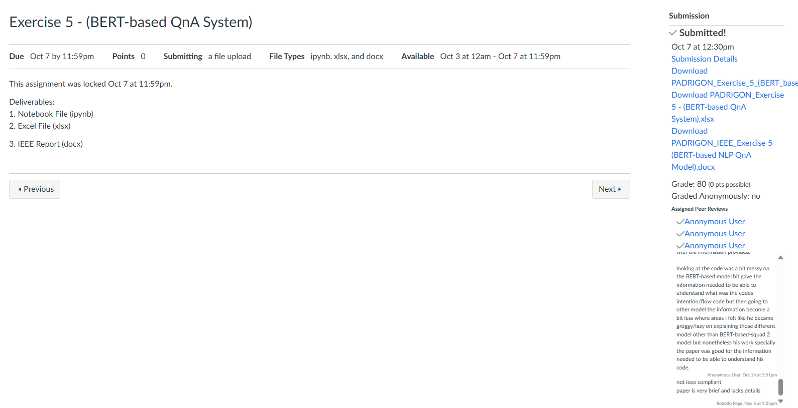

Exercise M1 - Implementing NLP Application Models using Spacy
Grade: 85
Exercise M1 - Implementing NLP Application Models using Spacy Activities
Learning Reflection
This activity helps me reflect on some key aspects of the NLP tasks using the spaCy library, including text classification, entity recognition, POS tagging, sentiment analysis, and text summarization. Each task allowed me to apply the core NLP concepts by hands-on practice that helps deepen my understanding of the ways language models interpret and classify text. The whole process would include developing the spam and ham classifier which would learn me how a dataset would be created from nothing; how data should be marked in terms of assigning classification labels, and that an iterative model is trained toward distinguishing patterns. Named entity recognition and POS tagging, both, brought me into contact with spaCy's pre-trained models. Briefly put, I can get names and places very easily through NER or even parts of speech tagging using POS tagging. Firsthand, I was amazed at how these foundational NLP tasks would offer not only structural insights but also contextual information into the language necessary to understand the syntax of a sentence and the information it categorizes.
The task of sentiment analysis really brought home the importance of good training data and methods, including dropout regularization to avoid overfitting, when one trained a model to classify text as "POSITIVE" or "NEGATIVE". Witnessing how the model learned to identify subtle emotional nuances in text gave me a very practical appreciation for the challenges in sentiment analysis. Finally, in the simple text summarizer, I experimented with a very simple yet effective technique of sentence selection based on token frequency, allowing me to capture the crux of larger texts. This is useful for short text summaries, but it has limitations for more complex documents, so advanced summarization techniques become necessary in those cases. In a nutshell, through this activity, I come to understand more about how spaCy is capable in its execution and overall structured way to train any model on various NLP tasks from classification all the way to summarization.
Sep 16 at 12pm - Sep 20 at 10:30am
Exercise M1.1 - Evaluating NLP Model Performance
Grade: 70
Exercise M1.1 - Evaluating NLP Model Performance Activities
Learning Reflection
This analysis makes me reflective about the size of the dataset, quality, and its significance in affecting the performance of NLP models on numerous tasks and reiterating the requirement for task-oriented preprocessing and data management procedures. Results from each type of task like classification, Named Entity Recognition (NER), Part of Speech (POS) tagging, sentiment analysis, and summary text present a scenario of need for proper balance between dataset sizes and the application of adequate preprocessing procedures for optimizing performance.
For instance, in spam detection through text classification, I found that although the size of the dataset did increase accuracy, good preprocessing was critical in minimizing false positives. High recall with poor precision on the small, low-quality dataset was seen, where it became apparent that minimal preprocessing might preserve unnecessary noise that negatively impacts accuracy. On the contrary, the NER task showed a clear weakness: over-preprocessing, like stopping words, can severely degrade model performance by deleting context that is important to identify subtle entities. Such an outcome reveals that it is possible that over-processing can actually reduce the performance of tasks that are heavily dependent on subtle contextual hints.
The POS task did not show such sensitivity with respect to data size or quality of preprocessing and could achieve near-perfect results in all conditions. This would imply that even simpler tasks like part-of-speech tagging require minimal preprocessing and work reasonably well with small datasets. The results for the sentiment analysis, however, indicate that small datasets were reasonable even though larger dataset size coupled with low-level preprocessing helped maintain high accuracy, and capturing more data diversity did not necessarily come at the cost of excessive cleaning.
In text summarization, I learned that in the case of ROUGE, scores were found to relate well with both size of dataset and quality of preprocessing. Good-quality summarization came out with higher sizes of datasets, but on the other hand, when it comes to summarizing a smaller-sized dataset having a poor quality in terms of preprocessing, nothing really valuable can be pulled out from the dataset, therefore underlining the very process that summarization is; key content synthesis, thus sensitive both by the size and quality of dataset.
In summary, this exercise improved my perception of how performance varies wildly among NLP models given variations in the size of datasets and rigor in preprocessing, emphasizing that each such task needs its unique setting to maximize the outcomes.
Sep 19 at 10:30am - Sep 28 at 10:30am
Exercise 5 - (BERT-based QnA System)
Grade: 80
Exercise 5 - (BERT-based QnA System) Activities

Learning Reflection
This exercise taught me better ways to fine-tune and evaluate pre-trained BERT models in Q&A tasks. For this experiment, I took four different BERT-based models with different configurations and architectures and tested them against a set of manually constructed questions, so I was able to see how the model choice affects performance in terms of token-level accuracy and semantic understanding. By looking at models such as deepset/bert-base-cased-squad2 and google-bert-large-uncased-whole-word-masking-finetuned-squad, it could be seen that it had the exact token matching place where specific models could show better semantic meaning, thus having that reflected in measures of Precision, Recall, F1-score, BERTScore, etc. But one of the principal inferences I made there is that structure and training objectives were affecting suitability of an application in different models. The use case where it performed better would include token-level precision and accuracy, such as in use cases where answers are a matter of critical importance or even legal/financial related. On the other hand, google-bert-large-uncased-whole-word-masking-finetuned-squad exhibited strong strength in BERTScore on semantic similarity. This use case would fit applications relying on the contextual understanding within customer service chatbots or when context is required.
I also saw that salti/bert-base-multilingual-cased-finetuned-squad was balanced in terms of token-level accuracy and semantic understanding, especially in multilingual contexts, making it highly versatile for different Q&A scenarios. This exercise particularly brought home the importance of choosing models based on requirements for specific tasks, mainly when balancing exact match accuracy against a broader, context-sensitive understanding.
In summary, this experiment further reiterates that fine-tuning pre-trained BERT models for Q&A tasks requires a careful selection process based on the desired outcome. It also pointed out the value of metrics such as BERTScore that capture semantic similarity as complementary to traditional token-level metrics in providing a holistic view of the model. This reflection has proven informative on how the diverse configurations of models and various performance evaluation metrics would go into affecting Q&A systems in being more functional towards actual application.
Oct 3 at 12am - Oct 7 at 11:59pm
Oct 7 at 10:30am - Oct 14 at 10:30am
Midterm Examination
Score: N/A
Sep 12 at 10:30am - Sep 12 at 12:30pm